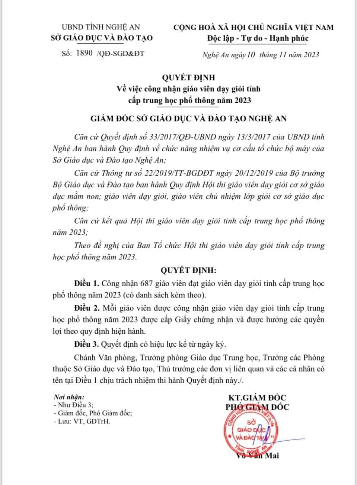
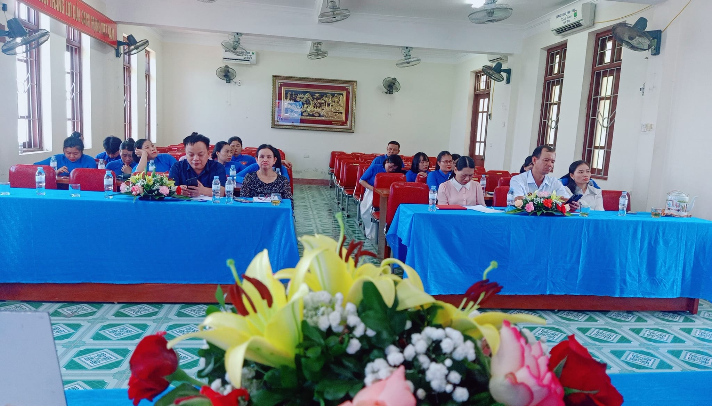

|  |
KẾT QUẢ HỘI THI GIÁO VIÊN DẠY GIỎI TỈNH CẤP THPT NĂM HỌC 2023-2024!Nâng cao chất lượng chuyên môn là một trong những mục tiêu, nhiệm vụ quan trọng của toàn ngành Giáo Dục. Với mong muốn được học tập, trau dồi kiến thức cơ bản về chuyên môn, nghiệp vụ, phương pháp dạy học theo tinh thần đổi mới, trường THPT Diễn Châu 2 đã tham gia Hội thi Giáo viên dạy giỏi cấp Tỉnh năm học 2023-2024 với khí thế sôi nổi, hào hứng và đầy quyết tâm! Đến với Hội thi này trường THPT Diễn Châu 2 có 15 giáo viên tham gia dự thi ở hầu hết các môn học. Kết quả 15/15 đồng chí đạt giáo viên dạy giỏi Tỉnh cấp THPT năm 2023. Đặc biệt có 3 Thầy Cô giáo đạt kết quả cao được Giám đốc Sở GD và ĐT tặng giấy khen, đó là cô Trần Thị Thu Hà môn Hóa, Thầy Lương Ngọc Long môn Thể Dục, cô Phạm Thị Huế môn Văn! Kết quả của Thầy Cô góp phần làm rạng rỡ thêm thành tích của nhà trường, thiết thực chào mừng kỉ niệm 41 năm ngày Nhà giáo Việt Nam 20/11! Xin chúc mừng thành tích của các Thầy, Cô giáo và Nhà trường! |
|
|
|
|  |
ĐẠI HỘI CHI ĐOÀN GIÁO VIÊN, NHIỆM KỲ 2023 - 2024!Thực hiện Chương trình công tác Đoàn và Phong trào thanh niên năm 2024 của Đoàn trường THPT Diễn Châu 2. Chiều ngày 22/9/2023, được sự nhất trí, chỉ đạo của Chi bộ, Chi Đoàn Giáo viên ( CĐGV) trường THPT Diễn Châu 2 đã long trọng tổ chức Đại Hội Chi Đoàn, nhiệm kỳ 2023 - 2024. Về dự và chỉ đạo Đại hội:
Về phía hội phụ huynh, có bác Trương Văn Toản, bác Nguyễn Thị Hằng.
Trong phần thảo luận, đc Trần Thị Thu Hoài đã có những chia sẽ tâm huyết về " Kinh nghiệm bồi dưỡng học sinh giỏi". Đồng chí Phạm Thị Huế cũng đã có những chia sẽ quý báu về " Công tác viết sáng kiến kinh nghiệm". Đại hội còn được lắng nghe những ý kiến chỉ đạo đến từ đc Phạm Thị Hương - BTCB - PHT, đc Cao Thanh Tuấn - HT nhà trường, đc Trần Thị Thu Hà - BT đoàn trường, bác Trương Văn Toản - hội trưởng HPH trường. Các đc không chỉ động viên, khích lệ tuổi trẻ nhà trường mà còn thẳng thắn chỉ ra những mặt hạn chế cần khắc phục, đồng thời gửi gắm niềm tin tưởng vào tuổi trẻ trường THPT Diễn Châu 2 và BCH nhiệm kỳ tới! Trong không khí dân chủ cùng sự thống nhất cao, Đại hội đã bầu ra 5 đồng chí đại diện cho ý chí, nguyện vọng của CĐGV trong nhiệm kỳ 2023 - 2024, gồm các đồng chí: Hoàng Thị Yến, Hoàng Thị Thương, Lê Văn Phúc, Trần Thị Hà và Hoàng Ngọc Ánh. Với tinh thần làm việc nghiêm túc, trách nhiệm cao, Đại hội CĐGV trường THPT Diễn Châu 2 đã diễn ra thành công tốt đẹp. CĐGV sẽ tiếp tục phát huy những truyền thống của tuổi trẻ trường THPT Diễn Châu 2, xây dựng CĐ ngày càng trong sạch, vững mạnh; Xứng đáng là ngọn cờ đầu trong phong trào thanh niên của Trường THPT Diễn Châu 2! |